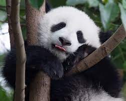

Gấu trúc lớn (Ailuropoda melanoleuca, nghĩa: "con vật chân mèo màu đen pha trắng",
tiếng Anh: Giant Panda), cũng
được gọi một cách đơn giản là gấu trúc, là một loài gấu nguồn gốc tại Trung QuốcNó dễ dàng được
nhận ra bởi các mảnh màu đen, lớn xung quanh mắt, trên tai, và tứ chi nó. Tuy thuộc về bộ Carnivora (bộ
Ăn Thịt), chế độ ăn của gấu trúc gồm hơn 99% tre, trúc.Gấu trúc trong tự nhiên thỉnh thoảng ăn cỏ
dại, thậm chí ăn thịt chim, gậm nhấm xác thối. Trong tình trạng giam cầm, gấu trúc ăn mật ong, trứng cá,
lá cây, bụi cam hoặc chuối cùng với các loại thức ăn đặc biệt khác.
Gấu trúc lớn sống ở một vài vùng núi ở trung tâm Trung Quốc, chủ yếu ở Tứ Xuyên, nhưng cũng xuất hiện ở
Thiểm Tây và Cam Túc.Nông nghiệp, phá rừng đã đẩy gấu trúc khỏi các vùng đồng bằng chúng từng sinh
sống.
Là một loài nguy cấp phụ thuộc bảo tồn.Một báo cáo 2007 cho thấy 239 cá thể gấu trúc sống trong điều
kiện giam cầm ở Trung Quốc và 27 nước khác trên thế giới.Ước lượng số lượng hoang dã rất khác nhau;
một ước tính cho thấy có khoảng 1.590 cá thể sống trong tự nhiên,trong khi một nghiên cứu năm 2006
thông qua phân tích ADN ước tính rằng con số này có thể cao đến 2000 đến 3000.